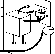
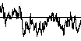

Cellular automata (CA) are abstract mathematical machines inspired by the question "Can a machine build a copy of itself?" Defined by very simple rules, CA can produce a considerable variety of behaviors, including some that appear organic, and also many that are fractal. CA are a convenient setting for exploring genetic algorithms, a powerful computer science application of a major biological paradigm. Some of the patterns that apppear here also arise in music and in history, pointing to fractal aspects in those fields.
Contents of this page:
| A. The Paradox of Self-Replicating Machines Can a machine make a copy of itself? Before the mechanism for the replication of DNA was discovered, some thought self-reproduction could not be explained mechanically. Von Neumann's resolution of this problem led to the field of Artificial Life. |  |
| B. Cellular Automata Basics What are CA? How do they work? How do we build a simple universe in a computer? | |
| C. Examples of Cellular Automata Patterns Yet another way to grow gaskets, and other surprises. Some cellular automata produce patterns whose time record is fractal; some others exhibit even more complicated behavior. |
|
| D. Genetic Algorithms and Artificial Evolution A message from biology to computer science. Applying the biological paradigms of crossover and mutation to evolve smart programs from a population of dumb programs. | |
| E. Fractal Fitness Landscapes A message from fractal geometry to evolution. A map of the fitness of genotypes reveals not only multiple peaks, but a fractal distribution of peaks. This has implications for evolutionary strategies. | |
| F. 1/f Noise Scalings in CA, evolution, and elsewhere. This scaling, that the size of events falls off as roughly the reciprocal of the frequency of the events, is present in a wide variety of settings, yet the source of this behavior remains unclear. |  |
| G. Music including 1/f Voss and Clarke observed 1/f scalings in many kinds of music, and in music from different cultures. Because many natural processes exhibit 1/f scaling, this may be a way music imitates nature. | |
| H. Fractals in History There is some evidence that the distribution of conflicts, and of other major events, exhibit 1/f scaling. But perhaps other hierarchical structures are present in the fabric of history. Is Hegel's dielectic related to Leibnitz's monads? | |
| I. Video Feedback Connect the output of a videocamera to the input of a TV, and point the camera at the TV. Depending on focus, zoom, and the direction of the camera, complex patterns may appear. Is this an analog version of CA? | |
| J. How the Leopard Gets Its Spots A biological expression of CA principles appears to be responsible for the formation of the leopard's spots. The same mechanism may also explain the tiger's stripes. | |
| K. Neural Nets Over a billion years of evolution went into the development of the brain, so why not design a computer along the smame lines? One of the cornerstones of Artificial Intelligence (AI), neural nets are good at learning and at genralizing. Applications range from screening employees for psychological disorders to landing large jets. | |
| L. Artificial Life Don't just evolve populations of programs to solve problems; turn them loose as autonomous agents on artificial landscapes and see what happens. Will your computer begin talking back to you? |